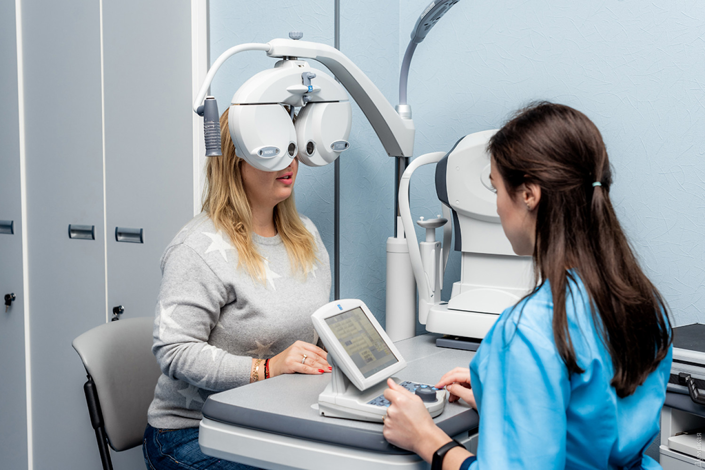

Medical Blog
Ivana Ivanovicha Ivanenko
Doctor of Medical Sciences,
nutritionist, surgeon.
phone number: 8 (800) 228 1337 00, eMail: doctorvan9ka@mail.ru
I.I. Ivanenko
Hello. You must have already read my name in the site's table of contents. But still, from the rules of etiquette, I will introduce myself. Ivan Ivanovich Ivanenko my name is already fifty-two years. I have over 25 years of experience in medicine.
He began his career in medicine with military surgery. Then I was a little over twenty. It was then that I got a base that goes with me throughout my life. Of course, it's silly to say that I worked only with this base. Let's just say she gave me a firm hand both in making decisions and in the focus of my actions.
I was attracted by a deeper understanding of things in the world. So it happened with my profession.Therefore, I embarked on the path of a complete study of our body, its actions and principles. This is not to say that before that I did not know something, in any case. I will lead to the fact that from an ordinary doctor I became a specialist not only in the field of surgery, but also studied the principles of our digestive system and the work of the entire metabolism.
My blog is aimed at helping people who are overweight or, conversely, suffering from anorexia. Also consultations about the operation. I also give lectures at the capital's universities.
News Block
| Mon. 10.05.2021 | New MRI machines have appeared in our clinic today. Now the German quality in the amount of two copies will serve to improve the quality of patient diagnostics. |
|---|---|
| Tue. 11.05.2021 | Good news! A new surgical wing has been opened in our clinic. |
| Wen. 12.05.2021 | A heroine appeared in the maternity hospital, who gave birth to five. The midwives called her Catwoman. |
| Thu. 13.05.2021 | A typical day in which we helped or saved an unusually large number of people. |
| Fri. 14.05.2021 | No news yet |
| Sat. 15.05.2021 | No news yet |
| Sun. 16.05.2021 | No news yet |
Services
Our clinic is renowned for its excellent and experienced staff. The Department of Surgery is renowned for its professionalism and dedication.
We have an ophthalmology department. Our specialists have experience in restoring vision after chemical and mechanical damage to the eyeball.In addition to rehabilitation measures, we carry out surgical interventions.
The best therapy department in the city! We have all the necessary equipment, as well as invaluable experience of the medical staff.
Our oncologists have helped countless patients. This is due to good supply, the purchase of quality equipment and invaluable experience of the staff.
Phone: 8 (800) 228 1337 00
Mail: doctorvan9ka@mail.ru
Address: Moscow, Pushkin st.,Kalatushkin's house.